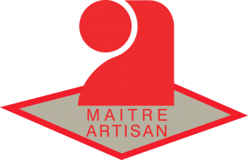
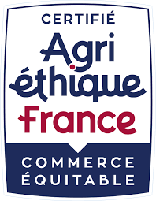
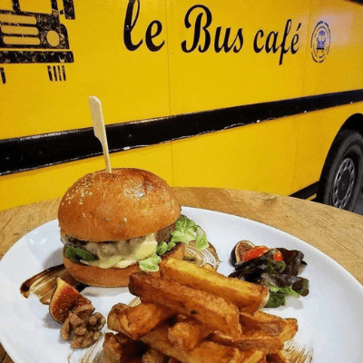

Nature
Le classique brioché, moelleux et doré. La base parfaite de tous vos burgers.
104 mm125 mm
Pains burger artisanaux, briochés, moelleux, fabriqués en Pays Catalan par un Maître Artisan Boulanger. 4 goûts, 2 formats, zéro conservateur. Vos clients vont devenir accros à vos burgers.
La viande, la sauce, la garniture : tout le monde y pense. Le pain, presque personne. Pourtant c'est lui qui porte tout le reste. Chez La Mie du Goût, on fait une seule chose : des pains burger briochés de haute qualité, pétris et cuits comme en boulangerie, pensés pour les restaurants, les fast-foods et les food trucks qui veulent faire la différence.
Le classique brioché, moelleux et doré. La base parfaite de tous vos burgers.
Le goût burger par excellence, torréfié et généreux en graines.
Un jaune solaire et une pointe d'épice. Vos burgers signature ont trouvé leur pain.
Le noir profond qui claque en photo et intrigue en salle. Effet garanti.
Chaque goût est décliné en 2 formats : 104 mm pour les burgers classiques, 125 mm pour les plus généreux. Laissez place à votre imagination et créez des burgers qui vous ressemblent.
Je veux goûter| La gamme | |
| Goûts disponibles | 4 goûts |
| Formats disponibles | 104 et 125 mm |
| Conservation | |
| DLUO, pour écouler chaque sachet sans stress | 21 jours |
| Tenue du produit après ouverture du sachet | 24 à 48 h |
| Conservateurs ajoutés | 0 |
| Emballage | |
| Conditionnement sous vide, atmosphère contrôlée | Gaz neutre |
| Objectif : optimiser vos stocks et répondre à la demande | Zéro gâchis |
| Fabrication | |
| Production | 100% artisanale |
| Filière blé, économie locale et bien-être animal | Agri-Éthique |
Chaque pain est fabriqué par Raphaël Bonneau, Maître Artisan Boulanger installé depuis plus de 15 ans dans les Pyrénées-Orientales.
Des matières premières sélectionnées rigoureusement pour un pain onctueux, brioché et très moelleux.
Une filière qui préserve le tissu économique local, l'environnement et le bien-être animal.
24 à 48 h de tenue après ouverture du sachet, sans aucun conservateur. Gérez vos stocks sereinement.
Des sachets sous vide avec injection d'un gaz neutre qui préserve la fraîcheur du produit.
Trois semaines pour écouler chaque sachet. De quoi voir venir, même quand le service est calme.


Raphaël Bonneau pétrit, façonne et cuit ses pains dans son fournil d'Elne, au cœur du Pays Catalan, depuis plus de 15 ans. La Mie du Goût, c'est son atelier dédié aux professionnels : la rigueur d'une boulangerie artisanale, au service de votre carte.

Merci à Raphaël pour ses pains hamburger artisanaux, qui permettent à l'équipe du Bus Café d'élaborer des burgers maison et savoureux !
Le Bus Café · client La Mie du Goût
Recevez gratuitement un sachet de pains burger fraîchement préparés. Remplissez le formulaire, on s'occupe du reste. Aucun engagement : juste du bon pain, et votre prochain fournisseur, peut-être.
Ou appelez directement :
06 14 67 18 59